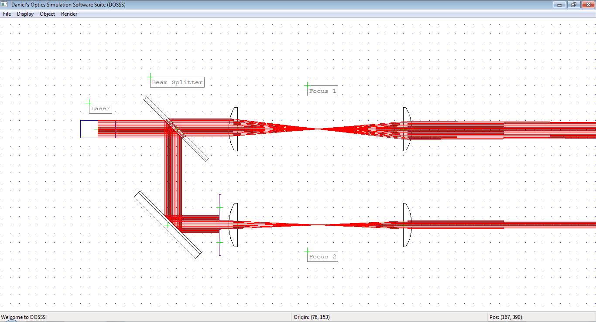

Daniel’s Optics Simulation Software Suite (DOSSS)¶
Despite its grand name, DOSSS is a simple 2D simulation tool that quickly allows you to create optical arrangements and visualize light propagation through optical components and complex assemblies using raytracing. The propagation of the light rays is thereby governed purely by geometric optics and Snell’s law at each interface of an optical component. For example, there will be a difference in the optical properties of a thick and a thin lens despite them having the same focal length.
{kind=link}
Support for wavelength-dependent optical properties is currently built in indirectly and can be controlled by setting the index of refraction for each optical component. I have planned to extend this concept by allowing light sources with multiple wavelengths and wavelength-dependent refractive indices instead of constants.
Contents¶
Licence¶
This program is free software: you can redistribute and/or modify it under the terms of the GNU General Public License as published by the Free Software Foundation, either version 3 of the License, or (at your option) any later version.
This program is distributed in the hope that it will be useful, but WITHOUT ANY WARRANTY; without even the implied warranty of MERCHANTABILITY or FITNESS FOR A PARTICULAR PURPOSE. See the GNU General Public License for more details.
You should have received a copy of the GNU General Public License along with this program. If not, see <http://www.gnu.org/licenses/>.
Copyright 2008 Daniel Dietze <daniel.dietze@berkeley.edu>.